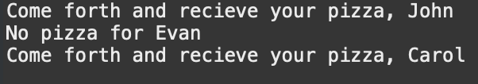

Java
+/- 5 Age

A simple program that takes your current age, adds and subtracts 5 years to it.
Average Length

A program that takes two word inputs and outputs the length of them.
BMI Calculator
A program that gets a users height and weight and outputs their BMI.
Counting Pairs

A program that takes user input words and outputs how many times letter repeat sequentially.
Divisors

A program that reads a number input and returns every divisor of that number
First or Last Vowel
The program will check if the first or last letter in the word is a vowel
Letter Remover
Reads an inputted string, and what to remove, the program output the cleaned version of it
Multiplication Table
A program that prints a multiplication table for a number up to a specified point.
Name, Age, Salary

A program that prints a multiplication table for a number up to a specified point.
Password

A reader program that takes a file input, reads if lines contain "pizza" in any way, then outputs either a successful or failed attempt
Perfect Number
A program that checks if the inputted number is a perfect number, a number whose divisors add up to itself.
Rock, Paper, Scissors
A simple game for rock, paper, scissors.
Reverse Number
Reverses inputted number.
Reverse Word
Reverses inputted word.
School Profile
Reads student inputted data and prints formatted profile.
Scores
A program that given an array of numbers can search for many items like odd or even numbers, average of all numbers together, or output in reverse order
Social
A program that reads inputted social security numbers based on format.
Word Length
Reads a user input word and determines if the word is an even length or odd length in letters.
Word Cleaner
Given an inputted string, and what to remove, the program will go through and remove and output the cleaned version of it.